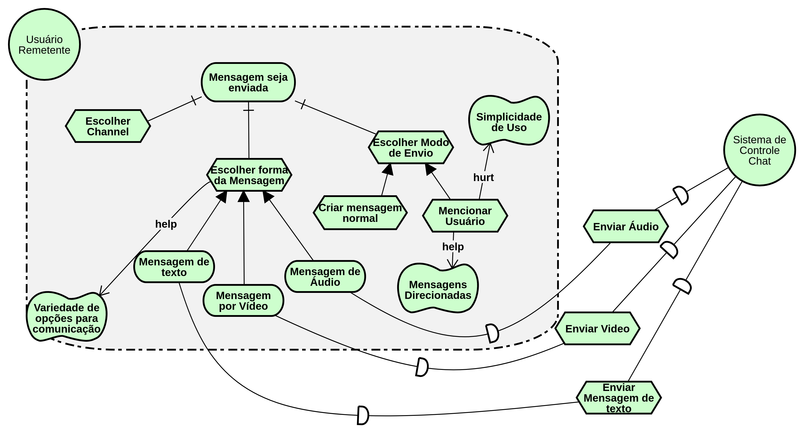

IStar
Strategic Dependency Models
ISD01 - Chat
Versão 01

Versão 02
ISD02 - Geral
Versão 01

Versão 02
ISD03 - Sistema de Contas
Versão 01

ISD04 - Ações sobre o channel
Versão 01
ISD05 - Contribuição da comunidade
Versão 01
ISD06 - Videochamada
Versão 01
Strategic Rationale Models
ISR01 - Criar channel
Versão 01

Versão 02

ISR02 - Realizar cadastro
Versão 01

ISR03 - Envio de Mensagens
Versão 01

Versão 02
Versão refatorada após o artefato ter sido reprovado de acordo com a análise IISR-03
ISR04 - Ações sobre as Mensagens
Versão 01
Versão 02
ISR05 - Ações sobre o Channel
Versão 01

ISR06 - Contribuição da comunidade
Versão 01
Versão 02
Versão refatorada após o artefato ter sido reprovado de acordo com a análise IISR-06
ISR07 - Videochamada
Versão 01
Versionamento
| Data | Versão | Modificação | Autor |
|---|---|---|---|
| 26/05/2019 | 1.0 | Abertura do documento | Lucas Maciel |
| 26/05/2019 | 1.1 | Adição do ISD01 - V1 | Lucas Maciel |
| 26/05/2019 | 1.2 | Adição dos ISD02 - V1, ISR01 - V1, ISR02 - V1 | Heron Rodrigues |
| 27/05/2019 | 1.3 | Adição do ISR03 - V1 | Lucas Maciel |
| 27/05/2019 | 1.4 | Adição do ISR04 - V1 | Lucas Maciel |
| 27/05/2019 | 1.5 | Atualização do ISR04 - V2 e ISD01 - V2 e adição ISD03 - V1 | Lucas MAciel |
| 29/05/2019 | 1.6 | Adição do ISR01 - V2 | Heron Rodrigues |
| 29/05/2019 | 1.7 | Adição do ISD02 - V2 | Heron Rodrigues |
| 29/05/2019 | 1.8 | Adição de ISD04 - V1 | João Lucas |
| 29/05/2019 | 1.9 | Adição de ISR05 - V1 | João Lucas |
| 29/05/2019 | 1.9 | Adição de ISD05 - V1 | Marcos Nery |
| 29/05/2019 | 2.0 | Adição de ISR06 - V1 | Marcos Nery |
| 29/05/2019 | 2.1 | Adição de ISD06 - V1 e ISR07 - V1 | Weiller Fernandes |
| 24/06/2019 | 2.2 | Adição de ISR03 - V2 e ISR06 - V2 | Weiller Fernandes |